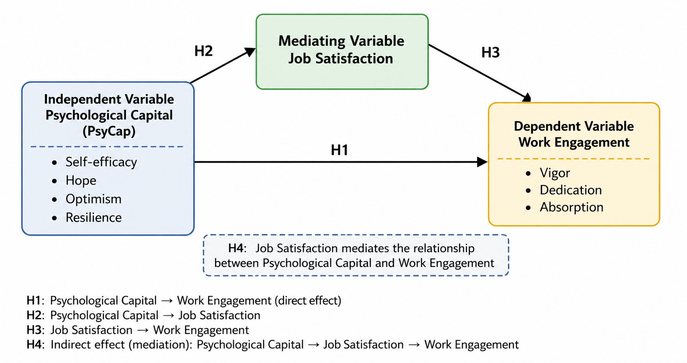

Track A: Full SPSS-Based Analysis
Open the SPSS-based roadmap, stage pages, downloadable files, and report previews.
PHD-Course Research and Analytical Methods
A structured academic website documenting two methodological analysis tracks for supervisor review.
This project presents a structured web-based roadmap for documenting the methodological and statistical analysis process conducted for the course PHD-Course Research and Analytical Methods. The project is organized into two complementary analytical tracks: Track A: Full SPSS-Based Analysis and Track B: Integrated SPSS-AMOS Analysis.
The current downloadable files and report previews belong to Track A. Track B is currently in process and is presented as a planned AMOS/SEM analytical pathway.

Open the SPSS-based roadmap, stage pages, downloadable files, and report previews.
Open the in-process AMOS/SEM plan, including CFA, model-fit assessment, structural modeling, and SEM-based mediation steps.
| Stage | Track A: Full SPSS-Based Analysis | Track B: Integrated SPSS-AMOS Analysis |
|---|---|---|
| Data Cleaning | SPSS files and report available | Use cleaned SPSS dataset as AMOS preparation foundation |
| Demographic Analysis | SPSS output and report available | Use sample profile as contextual reporting support |
| Descriptive Statistics | SPSS descriptive output and report available | Use descriptive profile before measurement modeling |
| Assumption Testing | SPSS diagnostics and report available | Review assumptions before SEM model estimation |
| Reliability | Cronbach's Alpha output and report available | Prepare Composite Reliability assessment if applicable |
| Validity | EFA output and report available | Prepare CFA measurement model in AMOS |
| Correlation | Pearson correlation output and report available | Review model-based associations after SEM estimation |
| Regression | SPSS regression report available | Prepare AMOS structural model |
| Mediation | SPSS/PROCESS-based mediation report available | Prepare SEM-based mediation using AMOS |
| Final Output | SPSS-based statistical report | SEM-supported paper section in process |